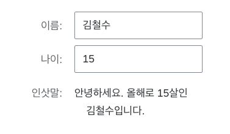
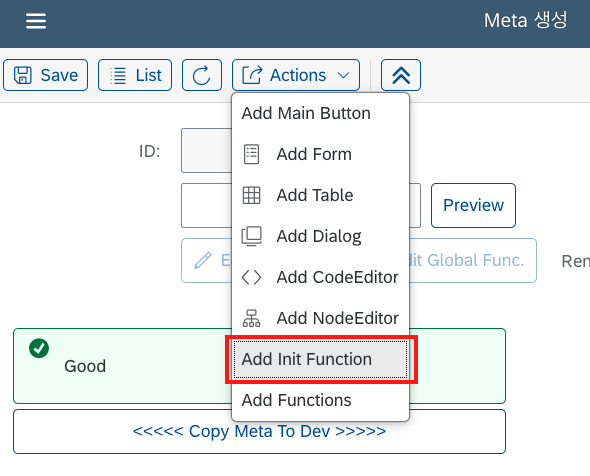
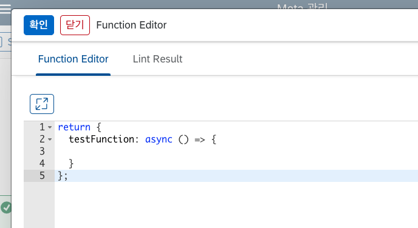
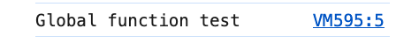

함수
LC5 Builder에서는 페이지에서 실행될 함수를 작성할 수 있으며, 페이지의 렌더링 사이클 및 컴포넌트 이벤트 핸들러에 커스텀 함수를 연결하여 호출하는 것이 가능합니다. 이를 통해 복잡한 비즈니스 로직을 연결하여 자유도 높은 웹 서비스를 개발할 수 있습니다.
LC5에서 함수를 구분하는 기준에는 여러 가지가 있습니다. 이번 장에서는 해당 기준들에 대해 살펴보며 함수가 LC5에서 어떻게 정의되는지 알아보겠습니다.
전달되는 방식에 따른 함수 분류
Quick Start 페이지에서 봤듯이 LC5에서는 함수 타입을 컴포넌트의 옵션으로 전달할 수 있습니다. 하지만 옵션의 종류에 따라 그 값은 사실 함수가 아닐 수도 있습니다.
LC5에서는 변수에 따라 동적으로 정해지는 값도 Function 타입을 통해 전달할 수 있습니다. 함수 내에 정의된 로직을 실행하고, 그 결과값을 value에 반영하는 방식입니다. 따라서 이 두 가지 경우를 구별해야 합니다.
정리하자면, LC5에서 Function 에디터를 통해 전달할 수 있는 값에는 두 가지 종류가 있습니다. 첫 번째는 함수 자체로 값이 전달되는 방식이고, 두 번째는 함수의 실행 결과가 값으로 반영되는 방식입니다. LC5 내에서 첫 번째 함수는 async function, 두 번째 함수는 non-async function이라고 명명합니다. 각 함수에 대해 설명드리도록 하겠습니다.
async Function
작성한 함수가 함수 그 자체로 값에 전달되어 부착되는 Function 타입입니다. 보통 직관적으로 생각하는 '함수 타입' 값이 LC5에서는 async Function에 해당합니다.
async Function 여부는 LC5 내의 시스템에 따라 자동으로 반영되며, 다음 경우들이 async Function에 해당됩니다.
- Add Init Function을 통해 생성한 최초함수. 최초함수에 대해선 아래에서 설명할 것입니다.
- Key를
onChange,onClick과 같이 이벤트 핸들러 이름으로 붙인 Function Type 옵션. 여기에는valueHelpV2-onConfirm,valueHelpV2-onRequest와 같이 valueHelp 관련 이벤트 핸들러도 포함됩니다.
예시를 들어 보겠습니다. Input 타입 컴포넌트의 onChange 옵션으로 다음과 같은 함수 코드 로직을 설정하고 저장한다고 가정해 봅시다.
async () => {
console.log("Hi!");
};
이 경우 async Function의 두 번째 조건에 해당되므로, Input의 onChange 프로퍼티에 지정한 함수가 그대로 전달되어 인풋값이 변경될 때마다 로그에 'Hi!'가 찍힐 것입니다.
async 함수의 경우, 반드시 코드 로직 앞에 async 키워드를 붙여야 합니다. 즉, async () => {} 형태로 작성해야 합니다. async를 붙이지 않고 저장할 경우, 함수가 제대로 실행되지 않을 수 있습니다.
non-async Function
작성한 함수가 컴포넌트 렌더링 시점에 실행되어 함수의 리턴값이 옵션값으로 전달되는 Function 타입입니다. 위에서 async Function의 조건에 해당하지 않는 모든 함수 옵션들은 non-async Function으로 처리됩니다.
예시를 들어 보겠습니다. Quick Start 페이지에서 만들었던 회원 명단 페이지에 non-async Function을 사용한 폼 컴포넌트를 하나 추가해 봅시다.
폼에 Text 타입 컴포넌트를 하나 추가하고, value 타입을 Function으로 지정한 뒤 다음과 같은 값을 넣고 저장하였습니다.
({ state }) => {
if (
!state.forms.forms1 ||
!state.forms.forms1.age ||
!state.forms.forms1.name
) {
return "";
}
return `안녕하세요. 올해로 ${state.forms.forms1.age}살인
${state.forms.forms1.name}입니다.`;
};
Preview를 해봅시다. 어떻게 될 것 같나요? 폼의 끝부분에 이름 value와 나이 value를 받아서 동적으로 값을 계산하는 텍스트 컴포넌트가 추가되었습니다.

이렇듯 Function 함수는 동적으로 값을 계산하여 적용하고자 할 때 사용합니다. 즉, 값을 결정하는 과정에서 지정한 함수를 사용하는 것이지, 함수 자체가 값으로 전달되는 것은 아닙니다.
async Function과 non-async Function의 구분
특정 옵션의 타입을 Function으로 지정했을 때, 반영될 함수가 async 타입인지는 코드 에디터 UI를 통해 확인할 수 있습니다.
만약 async 키워드가 파라미터 앞에 붙어 있다면 해당 함수는 async 방식으로 반영된다는 의미입니다. async 키워드가 없다면, non-async Function으로 적용된다는 뜻입니다.


async 키워드가 있을 땐 함수 코드 앞에서 async를 넣어야 한다는 사실을 잊지 마세요. 반대로 non-async Function의 경우 async를 붙이면 안 됩니다.
특별한 함수 타입
지금까지 우리는 전달되는 방식에 따라 함수 옵션을 async Function과 non-async Function으로 구분하였습니다. 이번에는 컴포넌트 혹은 레이아웃의 옵션으로 추가되지 않는 특별한 함수들을 소개하도록 하겠습니다.
최초 함수(Init Function)
최초 함수는 페이지가 처음 렌더링되는 시점에 딱 한 번만 실행되는 함수입니다. 주로 데이터 페칭 로직, state 세팅 코드 등이 들어가게 됩니다.
최초 함수를 추가하는 방법은 레이아웃 컴포넌트를 추가하는 것과 같이 빌더 페이지의 Actions 버튼을 누르고 Add Init Function 버튼을 누르면 됩니다. 이후에는 상단 폼에 있는 Edit Init. Func. 버튼이 활성화되며, 이 버튼을 통해 함수 코드에 접근 및 수정할 수 있습니다.

최초 함수는 함수 타입으로 실행되므로 async Function에 해당됩니다.
전역 함수(Global Function)
전역 함수는 중복되는 함수 코드 로직을 별도의 공간에 저장하고 재사용하기 위해 만들어진 함수 저장소입니다.
전역 함수를 추가하기 위해선 Actions 버튼에서 Add Init Function 밑에 있는 Add Functions 버튼을 누릅니다. 그러면 이러한 코드 편집창이 뜹니다.

전역 함수는 {[키 값] : 함수} 형식의 객체를 리턴합니다. 여기서 저장한 전역 함수들은 다른 함수 옵션에서 fn 파라미터를 통해 접근할 수 있습니다. 예시를 위해 최초 함수 안에서 전역 함수를 사용해 보겠습니다. 전역 함수에 아래와 같이 작성합니다.
return {
testFunction: () => {
console.log("Global function test");
},
};
그리고 Init Function을 추가해서 아래와 같이 입력합니다.
async ({ fn }) => {
fn.testFunction();
};
만들어둔 전역 함수는 fn["지정한 키"]() 방식으로 호출할 수 있습니다. 이제 Preview로 이동해서 testFunction이 잘 호출되었는지 확인합니다.

지정해둔 console.log 로직이 무사히 불러와져서 실행된 것을 확인할 수 있습니다.
Global Function 안에서 정의되는 함수는 async 함수와 non-async 함수 둘 다 가능합니다. async 함수를 등록하고 싶을 경우, 함수 앞에 async를 붙여 정의하면 됩니다.